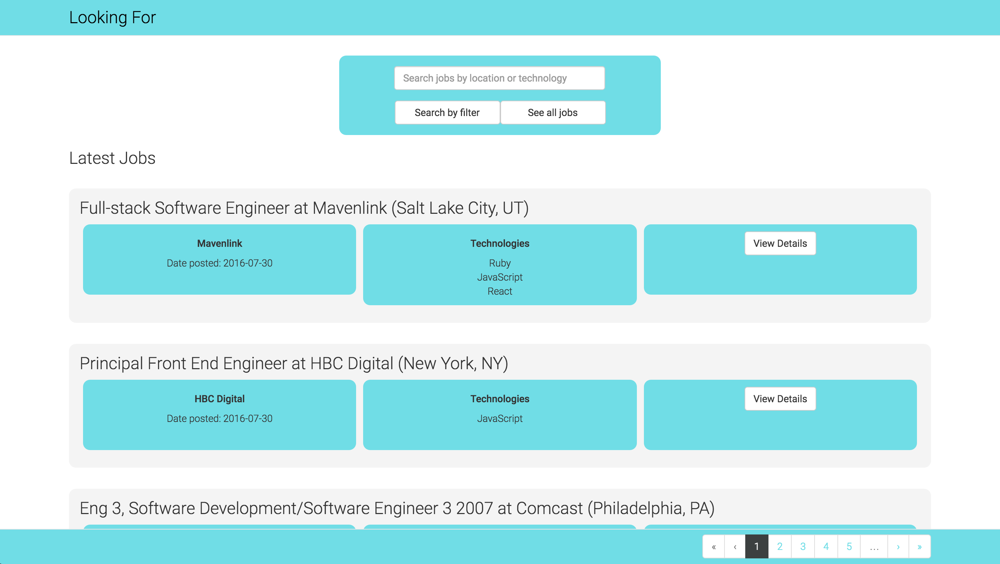

Background
At the end of Module 4, Turing students are given the opportunity to continue working on a code base that has been created and kept by previous Mod 4 students. I decided to work with a group of students on a React application that was using an API designed and maintained by other Turing students to scour job postings for positions potentially appropriate for Turing graduates.
The applicaiton renders react components including a search bar, a job index, which contains both job listings and a footer, and other associated React components. One additional aspect of this assignment is that a group of Turing alumni were invited to comment on pull requests as we submitted them. As someone still somewhat new to the field, I wanted to take the time to document how our team went about working on the project and responding to feedback from more experienced devs.
Our First Commit
When we began working on the project, there were existing issues documented on Github by previous contributors. Our first decision was which of these issues to tackle first. Ultimately we decided to open a new issue based on the demo that our instructor provided to us where she noticed that users were unable to hit the return key to initiate a search, and instead had to click on a submit button. It took us a little bit of time to get up to speed with the code base, but ultimately our change amounted to two small additions (view on Github):
onKeyUp={this.checkReturn.bind(this)}
This small addition added a listener to the search input field for a keyup action.
checkReturn(event) {
if (event.keyCode === 13) { this.sendSearchQuery(); }
}
This code made it so that if, on keyup, it was determined that a user had pressed return, the application would execute a search.
This initial pull request is documented here
Response
I think our team was surprised by the number of responses these two small changes generated. I would use three categories to describe the responses we received:
- Responses directly related to the additional functionality we were providing.
- Responses related to our code, but on issues outside the scope of this commit.
- Responses unrelated to the code we were changing.
Directly Related
One of the comments pointed out that some people might paste in a search term, and wanted us to double-check to see that our implementation would account for this behaviour. This was a great comment to receive. Through some additional testing, we found that if a user clicked into the search box, pressed command-v, and then hit return their search would work. However, if a user right-clicked on the search bar and selected 'paste' from a dropdown menu, the information entered into the search bar did not register since there was no keyup as they were entering search terms (we were updating the search term as keys were pressed), meaning that it was possible for the app to not recognize that a search term had been entered when a user used the submit button to search. We adjusted our implementation to update the search term on any change to the information in the search bar, but then still monitored for keyup events to allow users to press enter to search. I would consider this the ideal scenario. A useful comment was provided, we tested and adjusted our implementation, and incorporated the result into the final version that was merged.
Outside of Scope
We also received a comment regarding the formatting of the conditional we were using. I think this was absolutely in the spirit of the project, but ultimately the team decided not to implement a change. When we reviewed the comment regarding the formatting of this particular conditional, we looked to the rest of the code base to see if there was any precedent for how conditionals were being formatted. While the original comment recommended what felt like a cleaner context, what we found in our particular code base was inconsistent. We decided that consistency within the code base was more important than a general sense of what feels right on any given day. Because of this we decided to leave the comment unaddressed in our commit, but to open a new issue related to formatting consistency in the code base.
Unrelated
One of the comments that we received mentioned an issue that was outside of the changes that we made, specifically regarding the use of 'this' in the render method of a component. Again, this presented an interesting situation where we submitted a pull request in order to address a specific concern, and as a team determined that the comment would lead us to explore a related, but separate issue. As above, we decided not to address this comment in our pull request.
Other Notes
It's also interesting to note that while we specifically asked about the main.bundle.js file in our pull request, not one of the responses addressed that issue. Ultimately we committed our main.bundle.js, though based on our experience pushing to production it seems that might not have been the approach taken by the previous maintainers. I think this might have been different in a professional context, and senior devs might have stronger opinions on this aspect of the project. Given that we were working with volunteers, I can understand why they might want to comment on issues that were close to their hearts, and not weigh in on questions that might have a number of different approaches depending on the team.
Other Pull Requests and Communication
In addition to the responses we received from mentors regarding pull requests that we had submitted, we communicated with the back-end team providing our API through Github as well. This provided another interesting layer to our team communication. Early in the project, my team selected me as team lead. For the most part, we remained a pretty flat organization, but when working with the back-end team I definitely felt responsible for making sure their requests didn't go unannswered. These requests were fundamentally different from our pull requests, because they often referenced code I hadn't touched and didn't know in any sort of detail. I found myself wanting to ensure that I wasn't personally holding anything up, which meant that I had to dig in and make decisions, sometimes without first consulting the rest of my team. I was pleased to find that Github provided a good platform for me to have these discussions in the open so that my team was aware of what was happening.
Final Thoughts
Navigating feedback from outside sources, both senior to us and on our level, was likely the most rewarding aspect of this project for me. It was good to receive comments from devs with diverse experiences. It was great to hear outside opinions and work as a team to discuss how to proceed. I suppose the most surprising aspect of this experience was discovering how frequently responding to requests and commments consisted of simply saying, in the most polite way possible, no. It felt like an important lesson to learn, and I think that the way we dealt with the comments was frequently to do some additional work to ensure that they would be addressed eventually, but it's funny to review our progress and realize that more often then not we refused to make a change that was requested in the branch we were working.